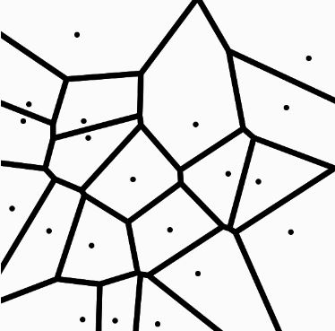
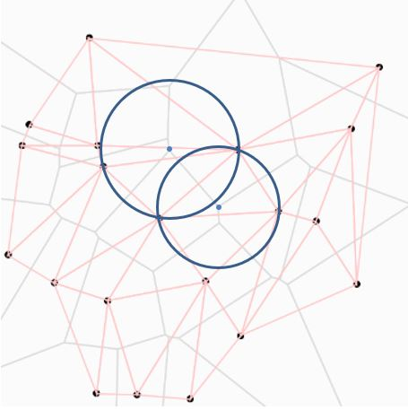
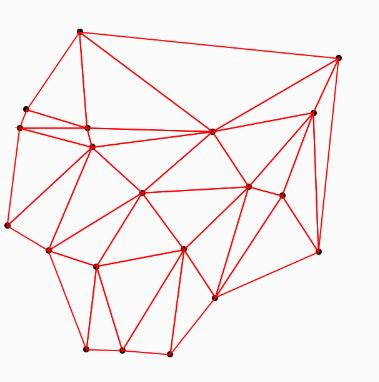
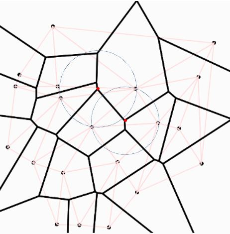
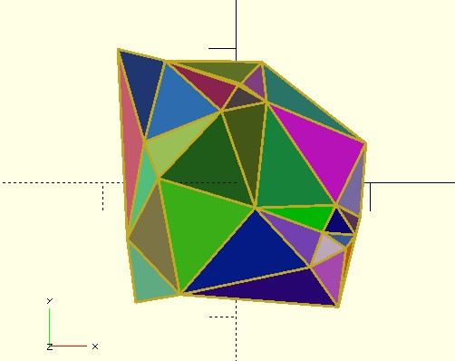
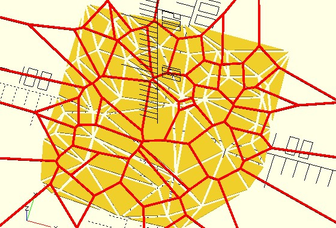
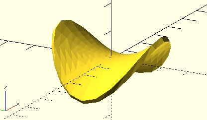
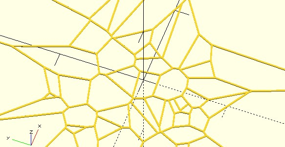
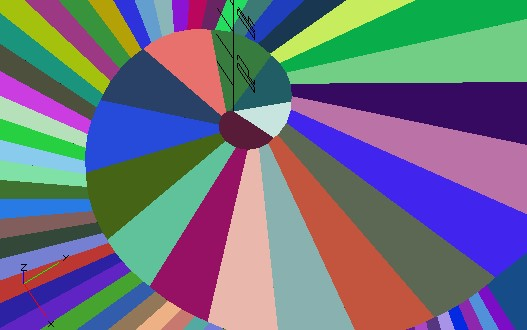
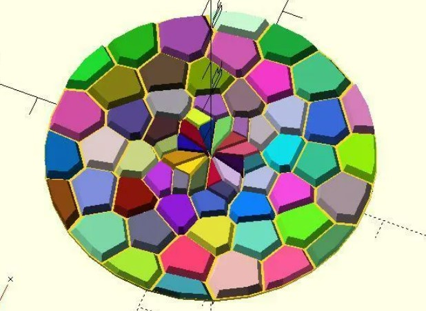

Delaunay 三角分割
April 4, 2022〈半平面交集〉求 Voronoi，計算的負擔很重，Voronoi 的另外解法之一是，先求 Delaunay 三角分割，再轉換為 Voronoi。
Voronoi 與 Delaunay 三角分割
來玩個連連看，如果給你一張 Voronoi 圖，每個相鄰的細胞彼此之間，若以直線連接細胞核，會如何呢？試試看吧！

如果你耐心地做完連連看了，應該可以畫出以下的一組紅色三角形：
這組紅色三角形中的每個三角形，若找出其各自的外接圓，很神奇地，每個圓中不會包含任何的點，來隨便找兩個鄰接三角形的外接圓看看：

從上圖中也可以觀察到，鄰接三角形外接圓的兩個交點，正好就是細胞核的位置，兩個圓心的相連線，正好是 Voronoi 細胞的邊，這不難理解，兩個細胞核連接成兩圓的中垂線，圓心的相連線會平分中垂線，細胞核與圓心的相連線間自然是等距。
反過來看，如果你有一堆隨機散佈的點，若一開始有辦法將這些點連接成這樣的一組三角形，每個三角形的外接圓不包含其他點：

那麼，找出相鄰三角形的外接圓，將圓心連接起來，就可以構成 Voronoi 圖形：

對於一堆隨機散佈的點，得到這樣的一組三角形，是數學家 Delaunay 在 1934 提出的一種三角分割，為了紀念他在這個領域的貢獻，這樣的三角分割，就稱為 Delaunay 三角分割。
Delaunay 三角分割後的三角形，外接圓並不會包含其他的點，這也代表了，三角形中也不會有其他點，這就意謂著，可以針對三角形中的資訊分析而不會重複，因此 Delaunay 三角分割在臉部辨識、地理資料分析等領域，都有著重要的應用。
tri_delaunay 函式
在演算法方面，想求得 Delaunay 三角分割，推薦的演算法之一是 Bowyer–Watson 演算，如果你對實作有興趣，可以參考〈玩轉 p5.js〉中 Delaunay 三角分割的系列文件。
dotSCAD 的 tri_delaunay 函式，實現了 Bowyer–Watson 演算，可以指定一組隨機點，傳回的資料預設是 list，元素為三個為一組的索引，可用這些索引來取得三角形的座標，透過 polygon 或是 polyline_join 繪製三角形：
use <triangle/tri_delaunay.scad>
use <polyline_join.scad>
use <util/rand.scad>
points = [for(i = [0:20]) rands(-100, 100, 2)];
tri_lt = tri_delaunay(points);
for(tri = tri_lt) {
poly = [for(i = tri) points[i]];
color([rand(), rand(), rand()])
polygon(poly);
polyline_join([each poly, poly[0]])
circle(1);
}
這會繪製出以下的結果：

如果指定 ret 參數為 "TRI_SHAPES"，傳回的 list 中，元素會是代表三角形的座標，如果指定 ret 參數為 "VORONOI_CELLS"，傳回的 list 中，元素會是代表每個細胞多邊形的座標：
use <triangle/tri_delaunay.scad>
use <polyline_join.scad>
points = [for(i = [0:50]) rands(-100, 100, 2)];
for(t = tri_delaunay(points, ret = "TRI_SHAPES")) {
offset(-1)
polygon(t);
}
color("red")
linear_extrude(1)
for(t = tri_delaunay(points, ret = "VORONOI_CELLS")) {
polyline_join([each t, t[0]])
circle(1);
}
這會繪製出三角分割與 Voronoi 的對應圖形：

Delaunay 三角分割的應用之一，是用來建立曲面，在〈從曲線到曲面〉談過的 sf_thicken 函式，指定的曲面資料必須是基於行列，不適用於一些非行列的曲面資料。
dotSCAD 的 sf_thickenT 函式，triangles 參數可以自行指定三角分割，可以搭配 tri_delaunay 函式來建立曲面，例如，來畫個洋芋片：
use <triangle/tri_delaunay.scad>
use <surface/sf_thickenT.scad>
thickness = .2;
a_step = 15;
r_step = 0.2;
function f(x, y) = (y^2 - x^2) / 4;
points = [
for(a = [a_step:a_step:360], r = [r_step:r_step:2])
let(
x = r * cos(a),
y = r * sin(a)
)
[x, y, f(x, y)]
];
triangles = tri_delaunay([for(p = points) [p.x, p.y]]);
sf_thickenT(points, thickness, triangles);
其實沒有指定 triangles 的話，sf_thickenT 預設也會使用點的 x、y 來建立 Delaunay 三角分割，結果就是會顯示以下的模型：

vrn2_cells_from 函式
如果你只是要指定隨機點來建立 Voronoi，可以使用 vrn2_cells_from，它在內部使用了 Delaunay 三角分割，然後轉換為 Voronoi：
use <polyline_join.scad>
use <voronoi/vrn2_cells_from.scad>
points = [for(i = [0:50]) rands(-100, 100, 2)];
cells = vrn2_cells_from(points);
for(cell = cells) {
polyline_join([each cell, cell[0]])
circle(1);
}
繪製的結果如下：

在〈Worley 雜訊〉看過，如果作為細胞核的點並不是隨機，而是特別經過安排，例如，位於〈黃金螺線〉上的點，就會形成漩渦的圖案，若套用在 vrn2_cells_from 呢？
use <polyline_join.scad>
use <voronoi/vrn2_cells_from.scad>
use <golden_spiral.scad>
use <util/rand.scad>
pts_angles = golden_spiral(
from = 3,
to = 10,
point_distance = 3
);
points = [for(pt_angle = pts_angles) pt_angle[0]];
cells = vrn2_cells_from(points);
for(cell = cells) {
color([rand(), rand(), rand()])
polygon(cell);
}
著色之後的圖案蠻漂亮的：

那麼，你可以試著實現〈Voronoi & Fibonacci〉嗎？
